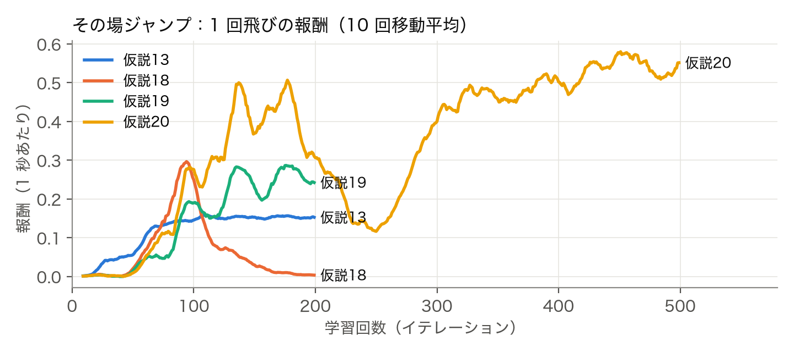
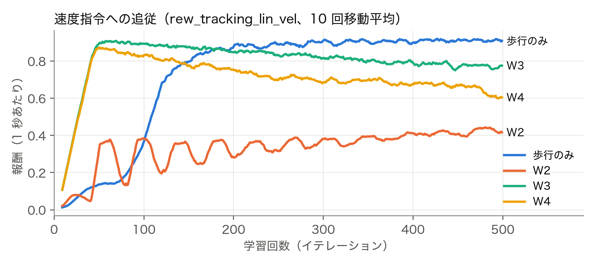
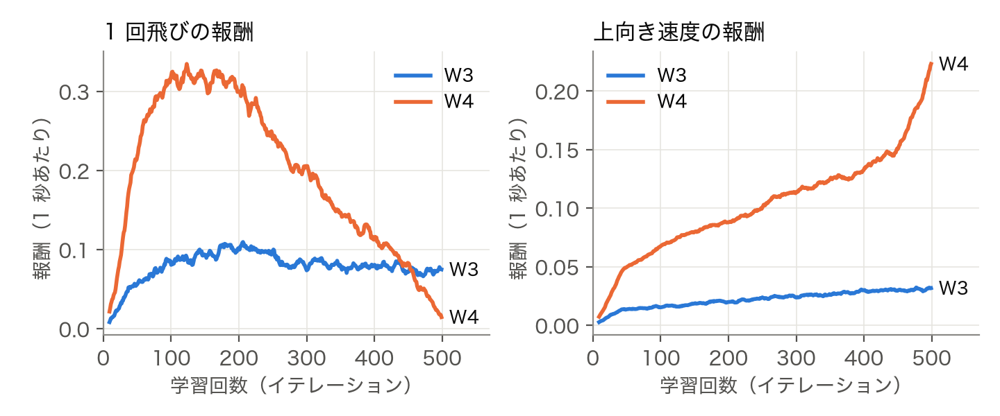
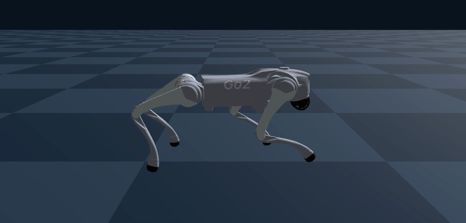
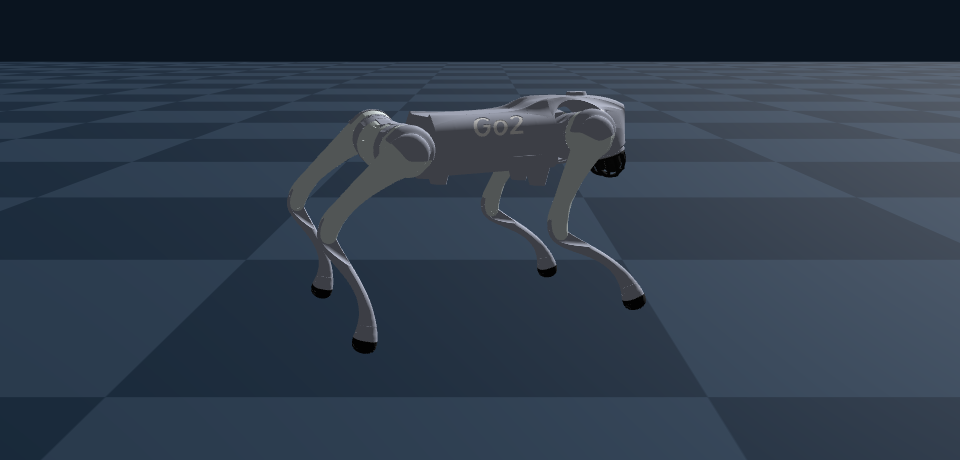

四脚ロボット Unitree Go2 に、速度指令どおりに歩きながら、「跳べ」の合図でジャンプする動きを、強化学習（PPO）で身につけさせる。最終的な目標は「障害物まで歩いて行き、跳び越える」ことである。
ジャンプは歩行と違い、「どういう動きが良いジャンプか」を報酬として書き下すのが難しい。報酬を少し変えるだけで、ロボットは設計者の意図しない「抜け穴」を見つけて報酬を稼ぐ。そこで本課題では、報酬の仮説を自分で立て、学習結果を数値と映像で評価し、なぜその動きになったかを報酬の損得から説明する、という手順を繰り返すことを目的とした。
| 項目 | 内容 |
|---|---|
| シミュレータ | Genesis（Apple Silicon の GPU で 4096 台を並列に動かして学習、制御周期 50Hz） |
| ロボット | Unitree Go2（12 関節、PD 制御で関節の目標角度を与える） |
| 学習アルゴリズム | rsl-rl の PPO（方策・価値関数とも 512-256-128 の全結合ネットワーク）。1 回の学習は 500 イテレーション（約 4,900 万ステップ、約 15 分） |
| 行動（12 次元） | 各関節の目標角度（基準姿勢からのずれ） |
| 観測（47 次元） | 胴体の角速度 3、重力の向き 3、指令 4（前後・左右の速度、旋回速度、跳べフラグ）、関節角度 12、関節速度 12、前回の行動 12、ジャンプの進み具合 1（0〜1） |
| 跳べフラグ | 4 秒ごとの指令の引き直しで、確率 jump_prob で 1 になり、1.0 秒間保持。キーボード操作（j キー）でも立てられる |
| 終了条件 | 胴体の傾き（roll / pitch）が 10° を超える、または 20 秒経過。本資料の「転倒」は、この傾きによる打ち切りを指す（床に倒れる前に打ち切られることもある） |
| 報酬 | 重み | 内容 |
|---|---|---|
tracking_lin_vel / tracking_ang_vel | 1.0 / 0.2 | 速度指令との近さ（歩行の報酬） |
lin_vel_z / base_height | -1 / -500 | 上下の速度、体高と 0.3m の差の罰。フラグが立っている間はかけない |
action_rate / similar_to_default | -0.005 / -0.1 | 動きの激しさ、基準姿勢からのずれの罰 |
jump_up_vel | 10 | 上向きの速度（フラグから 0.5 秒以内、体高 0.45m 未満、2.0m/s で頭打ち） |
jump_air_time | 20 | 4 本とも浮いている時間のうち 0.2 秒を超えた分（フラグ後の 1 回目の飛行だけ） |
jump_one_flight | 200 | フラグの終わりに、跳び上がった回数がちょうど 1 回なら 1 回だけ支払う（+4） |
landed_stance | 8 | 1 回目の飛行のあと、4 本とも接地している時間 |
base_contact | -200 | 胴体が床に触れたら罰 |
（報酬は毎ステップ「重み × 0.02 秒」で足される。歩行＋ジャンプではこれに termination（転倒で 1 回 -10）を加えた。）
make_video.py）を用意し、どの学習結果もすぐ目で確認できるようにした。歩行の報酬（速度指令との近さ＋姿勢・動きの罰）で 500 回学習し、前後・左右・旋回の速度指令に追従して歩けるようになった（tracking_lin_vel 約 0.93、転倒ほぼなし）。
| 仮説 | 変更内容 | 結果 |
|---|---|---|
| 1 | フラグ中は体高の目標を +15cm | 背伸びするだけで跳ばない（最高 0.393m） |
| 2 | 4 本とも浮いている時間に報酬 | 跳ばない。一度も浮かないので報酬が 0 のまま（まばらな報酬） |
| 4 | 上向きの速度に報酬、フラグ中は体高・上下速度の罰を外す | 初めて跳ぶ。最高 0.767m だが、空中で傾きが 10° を超えて打ち切られる（32 台 × 12 秒で 64 回転倒） |
| 5 | 上向き速度の報酬を 0.3 秒以内・0.45m 未満に制限 | 転倒 0。1 回のフラグで 3.67 回跳ねる |
| 6 | 滞空の報酬は 1 回目の飛行だけ | 1 回跳び（最高 0.538m）。ただし普段から低くしゃがんで構える |
| 7 | フラグが 0 のときの体高の罰を -50 → -500 | 普段の姿勢が 0.237m → 0.280m に戻る。最高 0.415m |
| 8 | 踏み切りの窓を 0.3 → 0.5 秒 | 胴体から床に落とし、その反動で上向き速度を稼ぐ。2 回跳び |
| 9〜11 | しゃがみ期を分ける、胴体の接地に罰、しゃがみ期の下向き速度に罰 | 胴体の接地は消えたが、時間をずらして同じ「落下＋反動」を続ける |
| 12〜13 | ちょうど 1 回跳んだら +4（jump_one_flight） | 1 回跳びの割合が一時 25% まで上がるが定着しない |
| 14 | 滞空の報酬をなくす／0.25 秒以上だけ払う | それでも落下する → 動機は滞空ではなく上向き速度の反動だと特定 |
| 15 | 上向き速度の重み 20 → 10 | 初めて、落下なしのきれいな 1 回跳び（最高 0.403m） |
| 16〜18 | 滞空報酬の重み・下限・1 回目だけの調整 | 高く跳ぶ（最高 0.514m）が、着地の小さな跳ねで 2 回に |
| 19 | 2 回目以降の飛行に罰 | 罰を恐れて跳ばなくなる（背伸び 0.345m） |
| 20 | 19 の罰を外し、着地して 4 本足で立っている時間に報酬 | 300 回目以降、毎回ちょうど 1 回跳ぶ。最高 平均 0.494m／最大 0.518m、転倒 0、胴体の接地 0 |
（仮説3 は途中で止めたため結果なし。仮説 8〜20 は報酬の値を少しずつ変えたもので、詳細はリポジトリのコードのコメントに残した。）

速度指令（前後 -0.5〜1.0m/s、左右 ±0.5m/s、旋回 ±1.0rad/s）を出しながら、跳べフラグも立てて学習した。
| 試行 | 変更内容 | 結果 |
|---|---|---|
| W1 | 仮説20 の報酬をそのまま使い、jump_prob 0.3 | 「自殺」：出現直後の体高の罰（-500）から逃げるため、3 ステップで傾いてエピソードを終わらせる |
| W2 | 体高の罰を -50 に戻し、転倒に罰（1 回 -10） | 自殺は消えたが、転ぶ危険のある歩く練習をせず、立ち止まる |
| W3 | 学習済みの歩行ポリシーの重みから開始 | 歩ける（指令 0.5 / 1.0m/s に対し 0.66 / 1.10m/s、転倒 0）。フラグが立っても跳ばない |
| W4 | jump_prob 0.3 → 1.0（ジャンプの練習量を約 3 倍に） | 歩きながら跳ぶ（最高 0.395m、転倒 0）。1 回のフラグで胴体が 2〜4 回上下する。後退とその場での旋回ができず、横移動も指令に届かなくなった |
操作して確かめたところ、W4 では後退とその場での旋回ができなくなっていた。ジャンプなしで指令を固定し、16 台 × 6 秒で測った結果を下に示す（値は実際の速度の平均で、動き始めの 1 秒を除く）。ポリシーは決定的に動くので、同じ条件の 16 台は同じ値になる。
| 指令 | 歩行のみ | W3 | W4 |
|---|---|---|---|
| 後退 vx = -0.5m/s | -0.49m/s | -0.38m/s | -0.00m/s |
| その場で左旋回 yaw = +1.0rad/s | +0.98rad/s | +0.69rad/s | +0.01rad/s |
| その場で右旋回 yaw = -1.0rad/s | -1.02rad/s | -0.10rad/s | -0.01rad/s |
| 前進しながら左旋回 vx = 0.5、yaw = +1.0 | 0.51m/s、+0.97rad/s | 0.66m/s、+0.94rad/s | 0.61m/s、+0.72rad/s |
| 左へ横移動 vy = +0.5m/s | +0.49m/s | +0.47m/s | +0.00m/s（1 秒立ってからだと +0.33m/s） |
| 右へ横移動 vy = -0.5m/s | -0.49m/s | -0.42m/s | -0.09m/s |
| まっすぐ前進 vx = 0.5（yaw = 0） | 0.51m/s、-0.02rad/s | 0.66m/s、+0.01rad/s | 0.66m/s、+0.13rad/s |
歩行のみのポリシーはどの指令にも追従できていたが、ジャンプを加えて学習し直すと、W3 で右旋回が、W4 では後退とその場での旋回がほぼできなくなった（その場に立ったまま）。前進しながらの旋回は W4 でも残っている。W4 では横移動も弱くなり、右へはほぼ動かず、左へは動き出す前の状態で結果が変わる（指令と同時に動き始めると 0、1 秒立ってからだと +0.33m/s）。まっすぐ前進の指令でも左へそれていく。転倒はどの場合も 0 回だった。
ジャンプは、歩行の動きのどの時点で j を押すかを変えて 15 通り測った（押してから 1.5 秒間。胴体が 0.33m を超えた回数を「上下」、4 本とも 0.06 秒以上浮いた回数を「飛行」と数えた）。その場では毎回 上下 4 回・飛行 4 回、0.5m/s では 上下 2〜4 回・飛行 2〜4 回、1.0m/s では 上下 3 回・飛行 1〜3 回で、1 回跳びにはならなかった。速く歩くほど、片足を接地したまま上下する回数が増える。




src/）uv run go2-train-walk、uv run go2-train-jump、uv run go2-train-walk-jump -e go2-walk-jump-w4 --init-from logs/go2-walking/model_499.ptuv run go2-teleop -e go2-walk-jump-w4（矢印キーで歩行、j で跳ぶ）uv run go2-make-key-demo-video、uv run go2-make-jump-demo-video、uv run go2-make-walk-jump-demo-video の 3 本をつないだ（スローの場面は画面内に「1/2 倍速」と表示）